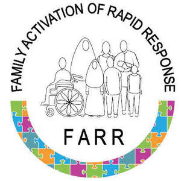

Trade Mark Journal No.2025/025 20 June 2025
UK00004214350 5 June 2025 (9,38,44,45)

- Class 9
- Software converters of natural language into machine executable commands; Software for converting natural language into machine executable commands; Speech recognition software; Programming software; Artificial intelligence and machine learning software; Computer programming software; Machine learning software; Communication software. .
- Class 38
- Transmission of short messages [SMS], images, speech, sound, music and text communications between mobile telecommunications devices; Computer-aided transmission of text. .
- Class 44
- Palliative care; Medical care; Health care; Nursing care; Medical care services; Nursing care (Provision of -); Provision of nursing care; Nursing care services; Health care consultancy services [medical]; Postnatal care services; Paediatric nursing services; Provision of health care services; Professional consultancy relating to health care; Consultancy relating to health care; Services for the provision of medical care information; Outpatient and inpatient care services; Postnatal care services for women; Consulting services relating to health care; Consultancy services relating to health care; Providing medical support in the monitoring of patients receiving medical treatments; Information services relating to health care; Medical nursing services; Nursing services (Medical -); Providing information relating to nursing care services; Preparation of reports relating to health care matters; Medical evaluation services; Medical nursing; Nursing, medical; Advice relating to the medical needs of elderly people; Medical and healthcare services; Providing medical advice in the field of geriatrics; Providing medical information in the healthcare sector; Technical consultancy services relating to medical health.
- Class 45
- Providing patient advocate services to hospital patients and patients in long term care facilities.
Nottingham University Hospitals NHS Trust